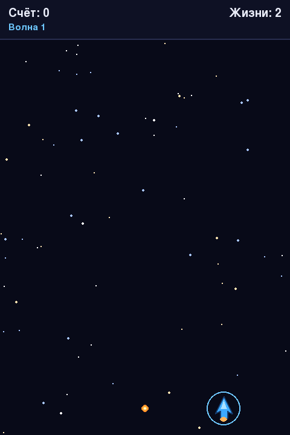

Глава 21 · Проект: космический шутер
Жизни, урон и временная неуязвимость
Несколько врагов, столкнувшихся одновременно, отнимают одну жизнь — а не одну за каждого.
Раздел 21.6 заканчивал игру от одного столкновения корабля с врагом. Финальная версия вместо этого считает жизни — но здесь есть менее очевидная ловушка: что, если сразу несколько врагов столкнутся с кораблём в один и тот же момент?
fragment_player_damage.py
def resolve_enemy_player_collisions(self):
hit = pygame.sprite.spritecollide(self.player, self.enemies, True)
for vrag in hit:
self._spawn_explosion(vrag.rect.center)
return len(hit) > 0
# в обновлении кадра:
collided = self.resolve_enemy_player_collisions()
if collided and not self.player.is_invulnerable:
self.lives -= 1
self.player.take_hit()Три врага одновременно — минус одна жизнь, а не минус три
spritecollide() удаляет все столкнувшиеся вражеские спрайты безусловно — но урон кораблю отдельная проверка списывает не более одной жизни за одно обновление кадра, независимо от того, сколько врагов задели корабль одновременно. Без этого разделения три одновременно налетевших врага отняли бы три жизни за один кадр, что ощущалось бы несправедливо резко.Временная неуязвимость
После удара включается короткое окно неуязвимости — во время него столкновения продолжают убирать врагов, но больше не отнимают жизни:
fragment_invulnerability.py
PLAYER_INVULNERABLE_SECONDS = 1.2
@property
def is_invulnerable(self):
return self.invulnerable_timer > 0.0
def update_timers(self, dt):
self.invulnerable_timer = max(0.0, self.invulnerable_timer - dt)
def take_hit(self):
self.invulnerable_timer = PLAYER_INVULNERABLE_SECONDS
Ровное кольцо вместо мигания
Мигающий спрайт — распространённый приём, но при быстром морганье он утомляет глаза. Здесь вместо этого — постоянное кольцо вокруг корабля, которое просто исчезает, когда
invulnerable_timer достигает нуля.Практика: урон и неуязвимость
Проверяется прямо в браузере — установка Pygame не требуется
Практика выполняется локально